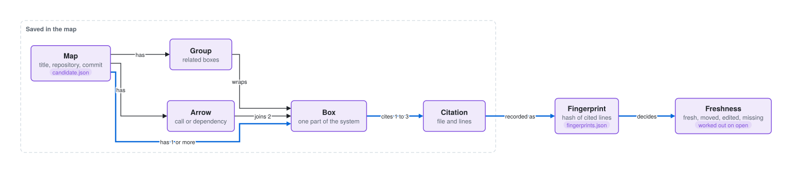
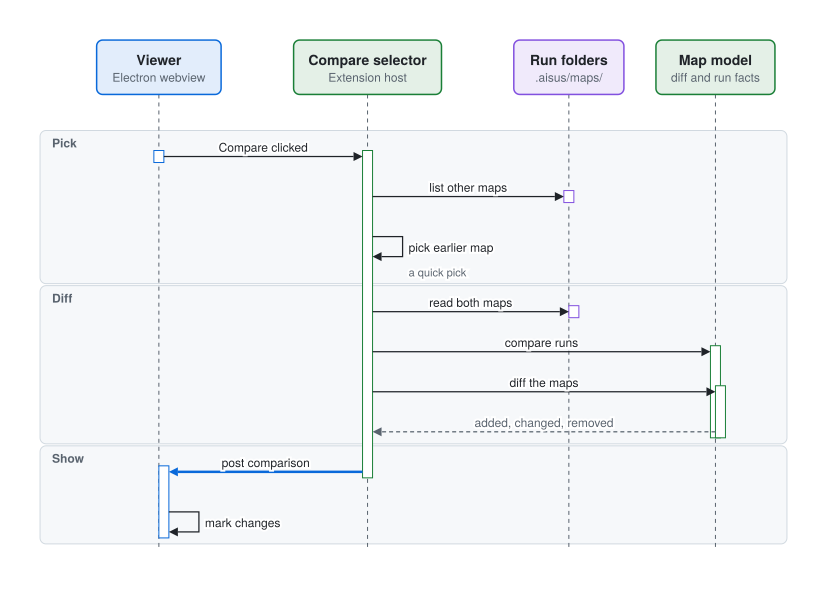
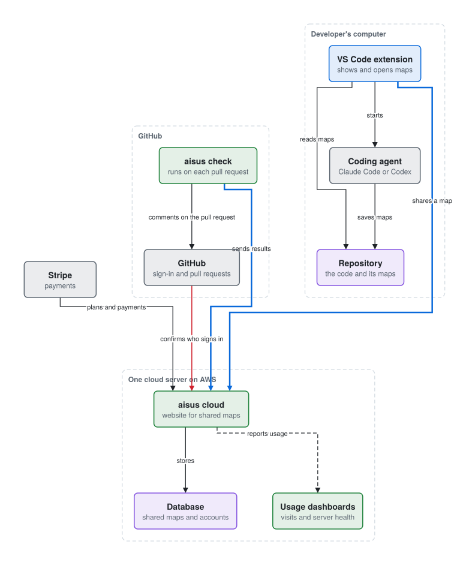
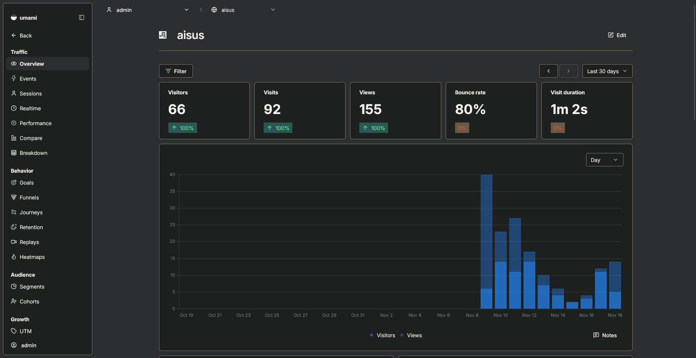
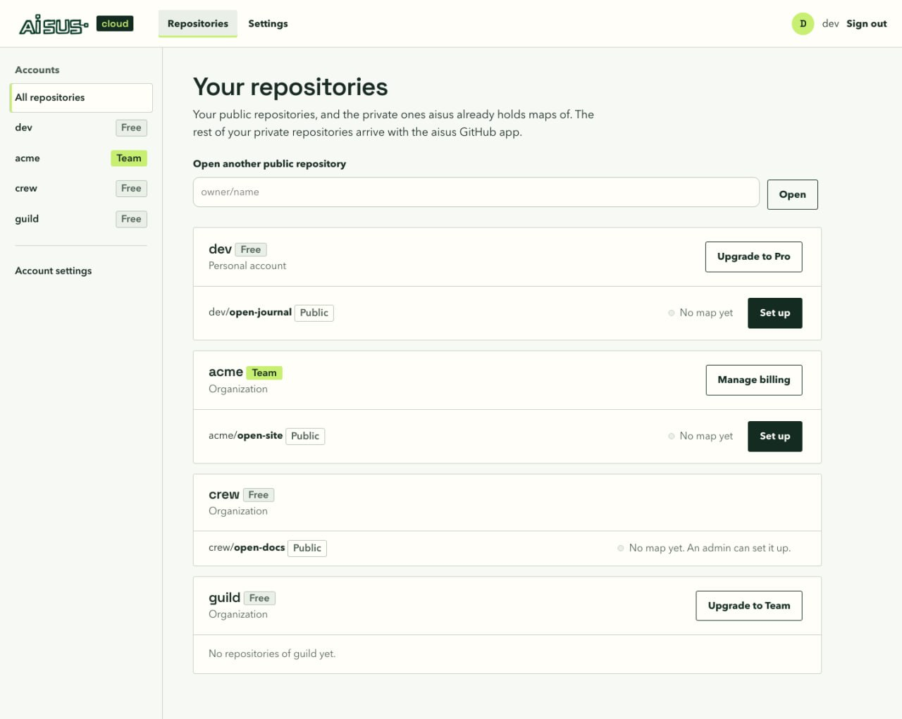
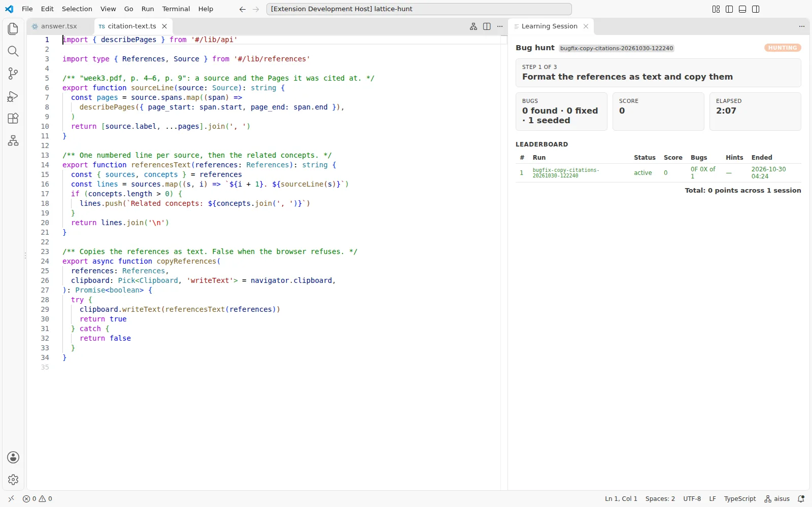
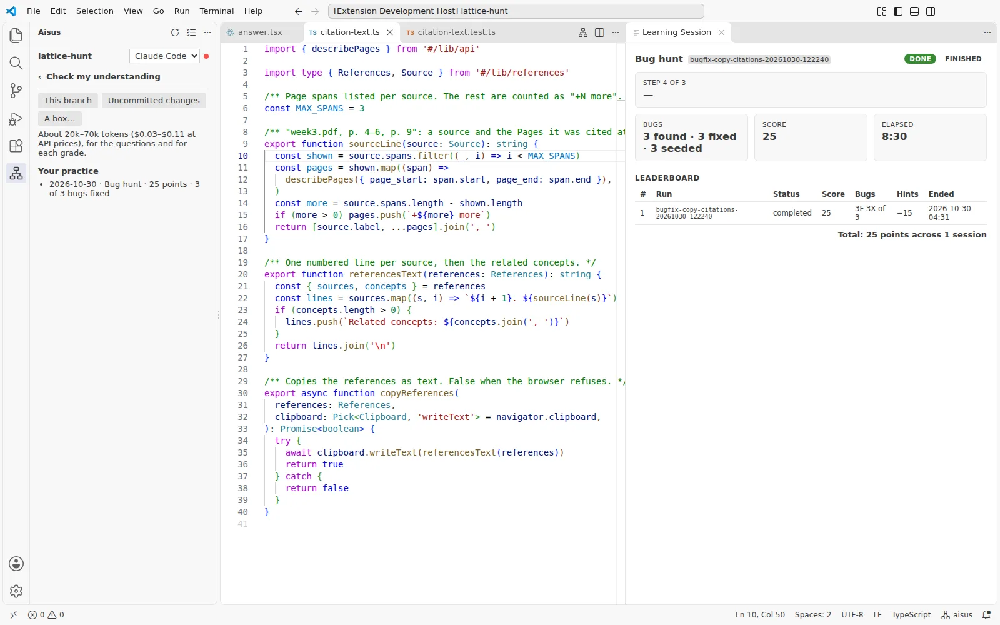
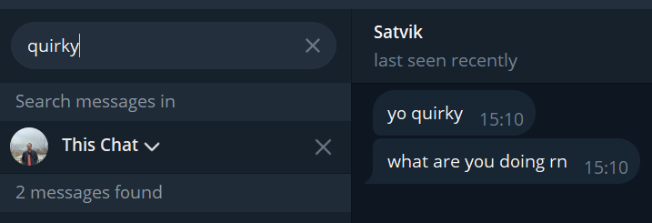

Final Report
Group 7
Chen Jianxi
Dinh Duy Linh Dan
Kerk Tai Heng
November 2026
1 The application
1.1 Try
This is VS Code running the released 0.3.4 on four real repositories. Nothing here is a mock-up.
- Click the icon in the Activity Bar on the left.
- Click Maps.
- Click a map's name to open it.
- Click any box or message to open the code it cites.
Click Tour in a map to walk through it one stop at a time.
Paxos is a sequence diagram. Caerus has a sequence diagram beside its architecture map.
Generate, Refresh and Ask are disabled as they require an agent.
1.2 What is
turns a codebase into a picture a person can hold in their head. A developer sees the architecture of a repository as a powerful visual abstraction and can check every claim the picture makes against the code itself.
holds the developer's own coding agent to the truth while it draws the map. Every box must cite real lines inside the repository, or the map goes back. When the code changes, it marks every part of the picture the code has left behind. It compares the code with fingerprints stored in the map, on the developer's own machine. It never sends code anywhere itself. The check costs no tokens.
The map belongs to no single tool. It opens in VS Code, Cursor and IntelliJ IDEA, as a page in any browser, on pull requests through a GitHub Action and on the web at aisus.dev. Any coding agent can draw it. Claude Code, Codex and Devin run 's skills directly. GitHub Copilot, Gemini CLI and OpenCode take a copied prompt. Even the rendering is open. Anyone can draw the map their own way (the diagrams are in JSON).
1.3 The symptom
Software is now written faster than anyone understands it, a gap well-known comprehension debt. On the best of days, its the existential crisis shared by millions of SWEs world wide. On the worst, comprehension debt rears its ugly head as an outage.
Agents do not close the gap. An agent reads a few files at a time, then forgets about the system at the end of the session. It can explain one function well and still miss how two services depend on each other.
We can let Microsoft's recent outage explain that point for us.
November's Patch Tuesday fixed 1,094 vulnerabilities. Microsoft credited AI for the number.
Two days later Exchange Online went down around the world for 23 hours and 50 minutes.
Microsoft's preliminary report traces the outage to a change shipped in July. Under load, the change made gateway servers wait on each other's locks until they ran out of CPU and memory. The defect was worse on newer machines with more cores. The defect passed Microsoft's load tests, which ran on weaker machines with fewer cores.
A routine failover then moved Teams traffic onto the gateway that Exchange uses, while 14% of its servers were already down. More than 80% of the gateway stopped responding. The boundaries meant to hold a failure inside one region did not hold. The change was too old to roll back. Servers that came back up were flooded by waiting traffic and failed again.
Microsoft says AI did not cause the outage. We do not claim it did directly. But consider that in the good ol' days, an engineer who knew the gateway inside out would have asked how a lock behaves on a machine with more cores. That engineer would have load tested on the machines that run in production. Even in top shops like Microsoft, that engineer doesn't exist anymore.
1.4 The vision
Programming stands at a precipice. Each generation of tools has carried people further from the machine. Assembly was too much, and we wrote C. C was too much, and we wrote Python. Code itself is now too much, and agents write it for us. Each step lets people build more while understanding less of what lies beneath.
What's next?
It might be AGI. That would be the end of everything anyway.
Or it might not. There is still a market in hedging for this future, where AI tooling has reached its efficiency ceiling and stabilises. The winner then becomes the one who predicts the next step after agents.
And it is the visual medium.
People understood the world by seeing it long before they read or wrote. Engineers still reach for a whiteboard when they need to explain a system. The chain of abstraction ends where it began, with the way humans meet the world. is a step in that direction. It draws the system as a picture and ties every part of the picture to the code that proves it.
2 Similar applications and what makes different
2.1 Eraser

How it works. Eraser serves system architects. It draws diagrams from cloud accounts, code, configuration databases and spreadsheets. Eraser scans a team's code on its own servers. To map it, a team connects a GitHub, GitLab or Azure DevOps repository and prompts for a diagram. Its Eraserbot watches chosen files and draws the diagram again when a pull request touches them.
Business model. Eraser sells seats, with AI usage metered in credits. The free plan has 3 files and 3 AI credits. Business costs $45 per member a month on an annual plan, with 100 credits and one connected repository. Every new AI drawing, including each Eraserbot update, spends credits, Revenue grows with both team size and AI use.
Traction. Eraser was founded in 2020. By May 2024 it had raised $6 million in venture funding, its AI had generated more than one million diagrams, and it reported tenfold growth since adding AI features. Its website shows Microsoft, Amazon, Visa, Gartner, KPMG and Kakao among its customers.
2.2 IcePanel

How it works. IcePanel serves software architects and engineering organisations. It is a collaborative tool for C4 models, which describe a system at the levels of context, container and component. Every diagram draws from one model, which people build by hand. Since October 2026 a model can also be drawn through a plugin for Claude Code and Copilot.
Business model. IcePanel charges per editor. Viewers are always free. One paying architect can share the model with a whole organisation. The free plan has one editor and 100 objects. Growth costs $40 per editor a month with MCP server support. Enterprise starts at 50 editors with single-tenant hosting. After Y Combinator, the founders chose to grow on revenue instead of raising more capital.
Traction. Two founders launched IcePanel in March 2021 and won their first paying customer, a Fortune 500 company, five months later. It joined Y Combinator's Winter 2023 batch. Its annual recurring revenue reached $2 million in January 2025 and $3.5 million by July 2026, with 900 customers. Its team has nine people. Its customer page lists Cisco, BMW, Alphabet and Shift4, among others.
2.3 CodeBoarding

How it works. CodeBoarding is the closest competitor to . It serves developers and code reviewers. It draws interactive architecture maps of a codebase and reviews pull requests as changes to those maps. Its engine runs language servers to find symbols and call graphs in 9 languages, then asks a language model to name and describe the components.
Business model. CodeBoarding follows an open core model. The engine is open source under the MIT licence and free to use. Because users bring their own model key, CodeBoarding carries little of the model cost itself. Pro costs $9.99 a month and offers unmetered use, faster generation and health monitoring.
Traction. The engine's repository was created in April 2025. On 18 November 2026 its VS Code extension had 1,900 installs. The engine had 2,685 stars and 235 forks. CodeBoarding also publishes many example maps of public repositories. Its company page lists a team of three.
2.4 What makes different
Integrated viewing experience
Eraser and IcePanel are web platforms. CodeBoarding's explore and review modes favour its web app too. A diagram in a browser tab sits far from the code it describes. Checking what a box means costs the developer a window switch and their place in both. opens the map in a panel beside the code, in VS Code, Cursor or whichever editor the developer already uses.
Visualising plans with diagrams
Developers now vibe code. They happily accept long plans written in plain text. When a plan grows long, it is hard to picture which parts of the system it touches, or what it might break by accident. 's plan skill turns a text spec into a change diagram based on the current system. The developer can correct a plan while it is still cheap, because they see its reach and risks before any code is written.
An index for agents
The map lists each part of the system with the files and lines that implement it. An agent that reads it first can go straight to the code a task touches, which saves exploration time and tokens on every task.
already writes the map into AGENTS.md and CLAUDE.md, the files coding agents read at the start of a session. Because it knows which boxes are fresh, it can tell the agent which entries to trust. The competitors' MCP servers give agents a diagram or a model without that signal. Their diagrams drift from the code unless someone maintains both.
2.5 Where falls short
Grounding
CodeBoarding's relationships come from static analysis, which no language model can invent. 's come from an agent. Evidence rules check the citations, but correct citations do not guarantee correct groupings. Pilot users raised map accuracy as a concern in Progress Report 2. A benchmark of map accuracy, still future work, would give the tool more credibility.
Breadth
Eraser and IcePanel serve audiences and diagram types that deliberately leaves out, such as presentation diagrams, business processes and future-state designs. We accept that. We would rather focus on developers, the audience we know best.
2.6 Threats
Convergence
The incumbents are adopting the idea of generating diagrams with the user's own agent. IcePanel's plugin of 22 October 2026 and Eraser's MCP server both show it. These generated diagrams drift from the code, with no version history to show it. That gap is where fits.
Agents' own indexes
Agent tools also build their own repository indexes and memory files. If those summaries become good enough, the agent half of the pitch weakens and the developer half has to carry it.
Sources
- Eraser: eraser.io, pricing, codebase diagrams, Eraserbot, customers, Business Insider, May 2024
- IcePanel: icepanel.io, pricing, customers, IcePanel's journey to $2 mil, Y Combinator profile, IcePanel plugin
- CodeBoarding: codeboarding.org, engine repository, GitHub Action, VS Code extension, company page
3 Milestones and timeline
3.1 Planned and actual timeline

3.2 Milestones hit and missed
HitLateMissed
| Milestone | Note |
|---|---|
| Interviews & Prototyping Initial understanding of the problem space | We interviewed 5 students about their coding habits. From their answers and our own views, we vibe-coded a few variations, then settled on one idea. |
| Progress Report 1 Prototype, customer contact report & prototype feedback | The v0.1.0 prototype was a VS Code extension that drew diagrams linked back to the code. |
| Learning Session feature Guided tasks that help users understand a codebase. | The feature became four: Ask, code tours, explain-back and Bug hunt sessions. |
| Landing page Marketing material preparation. | The aisus.dev landing page launched with the v0.3.0 extension. |
| Diagram version control Allow versioned diagrams so that the users can visualize the changes. | It took many iterations: a freshness badge, the Show Changes view, map comparison, a change summary panel, and /aisus-plan, which draws an AI's plan as a diagram. |
| Demo video Show users the features of . | Video 1, a tutorial on generating diagrams, was too dry to use. Video 2 onboarded the interviewees and ran at the class demo. Video 3, the STePS promotional video, won Best Video and Marketing. |
| Developer outreach Understanding users' needs | We contacted six developers and interviewed them about , as section 6 describes. A CS2103 evaluation pilot was dropped, because the CS2103 students had already finished their projects. |
| IntelliJ IDEA plugin Prepared for the CS2103 cohort. | The plugin generates maps, opens cited code and reviews changes. It does less than the VS Code extension. |
| Reduce LLM credits Reduce cost while maintaining accuracy. | It is a hard problem. An agent that reads less can miss the code a box should cite. Finding the balance needs deeper research than the schedule allowed. |
| Progress Report 2 Competitor analysis; Project iteration feedback; Marketing plans | We explored cloud features for collaboration, then shifted our focus to marketing and distribution across several channels. |
| Security scan Prevent code leakage and unintended code execution. | No security tests ran, because the team lacked the security expertise. The safety rules built into v0.3 keep writes inside the repository, let agents run only pre-approved commands, and cover prompt injection and secrets. |
| Class demo Prepare the demo and pitch. | v0.3.3 released. |
| Marketing poster design Project infographics. | We designed flyers and put them up around SoC. |
| Pilot fixes Resolve critical usability issues raised by the users. | v0.3.4 shipped after two weeks of fixes. |
| STePS preparation | won Best Video and Marketing at STePS, with its poster and its video. |
| Final report | Submit the final report before Nov 22. |
4 Contributions
4.1 Chen Dan Quirk Divide and Conquer
We split the work by time, not by area. Competitive programmers know CDQ Divide and Conquer, which cuts a problem along its time axis and solves each half in turn. Ours is the Chen Dan Quirk edition.
One of us holds the whole product at a time, in a shift of a few days. That person owns everything: the extension, the cloud, the server and the docs. They push as far as they can with tunnel vision, write a handover, and pass it on. The next person starts from that handover and never waits on anyone. No one owns a module. Each of us answers for the whole product. Chapter 8 explains why the workflow works and how its diagrams carry each handover.
4.2 The shifts
| Dates | On shift | What the shift pushed forward |
|---|---|---|
| 10 to 17 Oct | Jianxi and Dan | The first extension, the map viewer and the bug hunt learning sessions |
| 18 to 24 Oct | Kerk | The v0.3 specification, the security fixes, freshness and refresh, and cloud live on AWS |
| 25 to 27 Oct | Jianxi | The folder layout, the sidebar home, sequence maps, change history, team cloud sync, and the shift docs themselves |
| 27 to 30 Oct | Dan | The team page, the signed-in cloud, payments switched off, and bug hunt hidden until tested |
| 30 Oct | Jianxi | Pull request diagrams from a skill, and the signed-in cloud moved under /cloud |
| 1 to 9 Nov | Dan | The homepage rebuild, pricing, Get Started, the logo, the licences, the docs site, green unit tests on Windows, and the server rebuilt after it was lost |
| 1 to 18 Nov | Jianxi | Calibrated token estimates, nested maps, plan maps, skills installed per project and release 0.3.3 |
| 18 Nov | Jianxi and Kerk | This final report and its live demo |
4.3 Our niches
Owning the product by time put each of us in every part of it. Think of an electron cloud. Each of us is everywhere at once, but more likely to be found in some places than others.
| Member | Most often found in | Also, beyond the code |
|---|---|---|
| Jianxi | The groundwork: the core, the viewer, the extension and the agent skills | Market research, the poster and the final report |
| Kerk | Deployment: the AWS server, cloud's launch and this live demo | The flyers, the video and the final report |
| Dan | UI and UX: the homepage, the guides, the cloud's pages and the logo | The video, the poster, the progress reports and the customer contact report |
5 Application design
separates a platform-independent core from thin hosts. Figure 5 shows the modules and the contracts between them.
| Module | Role |
|---|---|
| Map model | The map format, the validator, git facts and the change check. |
| Layout | Places boxes and routes arrows. |
| Agent skills | Instruct a coding agent to draft a map, and ship the scripts that check and save it. |
| Viewer | Draws a map. Every host uses the same viewer. |
| Host | Starts runs and shows the viewer: the VS Code extension, the IntelliJ plugin and the cloud. |
Notes
A new host needs only a panel that starts runs and a place for the viewer. The core does not change.
A skill's only output is a map document (5.1). Any viewer that reads the format can draw it.

5.1 Data model
A map is a JSON document. Each element in it makes one claim about the code.
| Element | Claim | Required fields |
|---|---|---|
| Component (box) | A part of the system exists. | id, type, label, sources |
| Connection (arrow) | One part relies on another. | from, to |
| Boundary (group) | Some parts share a runtime, owner or trust boundary. | kind, label, wraps |
| Source (citation) | These lines make the claim true. | path, line, end_line |
Invariants
- Every component has one to three sources.
- A source path is relative, has no
.or..segment, and resolves inside the repository after symlinks. - A source never cites a file on the deny-list, such as
.envfiles, keys or.git. - Every cited line exists in its file.
Freshness
On acceptance, the validator saves a fingerprint for every source: the file's git blob id and a hash of the cited lines. Freshness is computed from the fingerprints alone. No agent runs.
| State | Meaning |
|---|---|
| Fresh | The cited lines are unchanged. |
| Moved | The cited lines are unchanged at a new position. The box opens them there. |
| Edited | The cited lines have changed. |
| Missing | The cited file is gone. |
A box takes the worst state among its sources.

5.2 Key flows
Generating a map
- The host starts the developer's coding agent with the architecture skill and an optional focus.
repo-factsrecords the commit and the repository's facts, and creates the run folder.- The agent reads the code and writes a draft.
validatechecks the draft: schema, references, then citations. The agent revises the draft from each error, which comes back with a JSON pointer.- Once the draft passes, the validator saves the map with its fingerprints. The host opens it.
Steps 2, 4 and 5 are plain code. Every box in an accepted map cites lines that exist. The map always renders.
Comparing two maps
- The developer picks an earlier map of the same code.
- The map model diffs the two maps, element by element.
- The viewer marks each box and arrow as added, changed, renamed or removed.
No agent runs. The comparison costs no tokens.


5.3 Deployment
| Part | Runs on |
|---|---|
| Extension, coding agent and maps | The developer's computer, beside the code |
| Pull request check | The repository's GitHub Actions runner |
| Cloud website and database | One small server |
| Sign-in and repository access | GitHub |
| Payments | Stripe |
What leaves the developer's computer
Drawing or comparing a map needs no server and no account. Data reaches the cloud only when a person chooses one of two paths: a developer shares a map, or a team turns on the pull request check's upload.
Only maps and check results travel. Code never does. The cloud holds no passwords and no card details.

6 Users and analytics
6.1 What we measure
sends no telemetry due to privacy concerns. Our numbers come from the analytics on aisus.dev, the VS Code Marketplace, and GitHub's counts of release downloads and repository visits.
6.2 The numbers
| Metric | Value | Source |
|---|---|---|
| Site visitors, 9 to 18 Nov | 66 visitors, 92 visits, 155 page views | Umami |
| Site visitors, 24 Oct to 8 Nov | About 260 to 430 visitors and 600 to 1,000 page views, estimated | The deleted server's traffic in AWS CloudWatch |
| Time on site | 1 minute 2 seconds a visit | Umami |
| Marketplace | 115 downloads | VS Code Marketplace, listed since 1 Nov |
| Release downloads | 51 extension, 11 IntelliJ IDEA plugin and 6 skills downloads | GitHub releases |
| Repository | 23 visitors and 104 cloners in 14 days | GitHub traffic |
| Cloud sign-ups | The GitHub sign-in app's user count | |
| Active users | Not measured | sends no telemetry |
All figures are from 18 November 2026. Time on a landing page is not a good measure of a developer tool. Even so, we did better than 99.99%.
6.3 Evidence
On 9 November a teardown script deleted our server and its only disk. Umami's history went with it. Section 6.4 estimates the lost visits from the network traffic AWS kept.

Visits turn into installs slowly. Between 330 and 500 people reached the site. GitHub served 68 release files and the Marketplace 115. Installing takes one click. Using it needs Node.js, a signed-in Claude Code or Codex, and the user's own tokens. That setup is where we expect most people stop. The live demo in section 1.1 skips all three.
6.4 How we estimated the lost visits
Thankfully AWS keeps a deleted server’s network metrics in CloudWatch for 15 months. We use the new server's traces to calibrate. On quiet days it sends about 7 MB of background traffic. Each page view adds about 0.6 MB on top. The old server sent 686 MB from 24 October to 8 November. Without the background, that is 600 to 1,000 page views. At the new site's ratio of visitors to views, it is 260 to 430 visitors.
6.5 Some curated user feedback
Six devs tried the production build. Here's what 3 of them told us.
Tejas, a first-year student. His messages, verbatim:
Bro ngl
I went back to my room
And used ur project instantly 😂
My only feedback is that.. after you click generate once... It's hard to give feedback on the next generate... Or like I couldn't find a way to ask it to regenerate with new feedback
On the same diagram
Otherwise it's really good
Satvik, an engineer at AICET. He liked the concept. He wants stress tests on larger codebases first, to see whether avoids the scaling problems he expects: diagrams that grow too complicated, and boxes that lose their granularity.
Yao Hui, an engineer at AICET. He joked about having to download VS Code again. He also liked the concept, but expects friction from engineers who are deeply set in their own prompting habits.
With all new tools, there will always be a friction barrier and a learning curve. Beyond that significant battle-testing is needed before production use. We are grateful that testers see the merit of our ideas, at the very least.
6.6 Our peerless marketing
We would like to especially highlight that Prof Ben roasted our asses after the second progress report for spending too much time building and not enough time marketing.
On 26 October, the day after the flyers went up, the site sent 108 MB, its biggest day on record. The first release was downloaded 29 times while the site served it.
Lo and behold, at STePS, won Best Video and Marketing. This is a general award. We beat everyone.
We also post on three public channels.
| Channel | Worth noting |
|---|---|
| YouTube | 73 views in four weeks, and 49 of them are the STePS promo video. Its thumbnail drew a click 7% of the times it was shown. YouTube search brought 27% of all views. We have 2 subscribers. |
| 41 page views, and 34 of them came on 5 and 6 November. All 21 views LinkedIn could place came from Singapore, mostly from people in software and education. | |
| Our posts and reels. |
The figures are from 21 November 2026. They come from YouTube Studio and LinkedIn's page analytics.
We implore the reader to factor in our ability to act decisively on Prof's feedback and our latent marketing genius in your evaluation of our project.
7 Future plans and strategies
7.1 cloud
The extension is free. We needed that to gain traction early on anyway. The costs are absorbed by the users in their token usage and disk space/repo bloat.
Cloud, team synchronization and enterprise plan, on the other hand, is a well-established monetization model that does require costs from us. We do indeed already have this deployed, but we have not been vomitously marketing it. With sufficient traction, we will be able to start charging for it.
| Plan | Price | For |
|---|---|---|
| Free | US$0 | The extension, the skills, the command line and the Action's comment |
| Pro | US$5 a month | cloud for one person's repositories |
| Team | US$10 per seat a month | cloud for a GitHub organization, with seats and the team page |
| Enterprise | Quote | cloud on the company's own servers |

7.2 for education
Every CS2103 team starts the same way. They inherit a working codebase, then spend the first weeks figuring out how it fits together.
Agents have made this worse. A student can now ship a feature into a codebase they never understood.
already has what a course needs.
Tours. A tour walks a newcomer through the map one stop at a time. Each stop opens the code, explains it and asks a question.

Bug hunt. The agent builds a task in steps and quietly plants one bug in each. The student hunts it down and fixes it. The agent is never allowed to fix it for them.
Similarly, we have not been vomitously marketing this plan to place emphasis on polishing our main feature.


Check my understanding. Three questions about a change, each graded against the code. Every finished tour, hunt and check lands in the student's practice log.
CS2103 is our target first course, with Prof Damith's blessing. The course runs on IntelliJ IDEA. supports it, but it requires more polish to reach the smoothness of our VSCode extension. The main selling point to educators is a grounded, healthy compromise. Students are going to outsource an inordinate majority of the work to AI anyway, for one reason or another. At least the work is not totally blind.
The TeamSync demo in section 1.1 is a CS2103T project, already mapped and toured.
7.3 sakai
reads the code that exists and draws its map. Its spiritual successor, sakai, also runs the other way.
Here's a quick pitch:
In sakai, the map is the program. You place blocks, link them and press Build. A coding agent on your own machine writes the code that makes the map true. Already have a codebase? Import it, and sakai draws the map for you.
This is the step section 1.4 predicted. Assembly, then C, then Python, then prompts. In sakai, the architecture itself is what you work in.
Links are first-class, with kinds, properties and code of their own. The facts that make or break a design, like concurrent, atomic or asynchronous, sit right on the map where nobody can miss them. Sakai's experience is designed to feel like an engineering strategy game, a bit like Factorio. We learned this lesson after seeing all the success the games were having at STePS.
Once that is in place, the next step becomes formal verification methods like static analysis, TLA+, Lean etc. to ensure the diagrams and code match up perfectly. Huge trend in the industry right now.

Our team is building sakai right now.
Lowkey we are genuinely asking whether sakai has startup potential...
8 What we learned
8.1 Chen Dan Quirk Divide and Conquer
We pioneered Chen Dan Quirk Divide and Conquer, a workflow made possible.
There is some multilayered humour here (which is admittedly only really funny if you are a super nerd). The name itself is a play on CDQ Divide and Conquer, an advanced algorithmic technique invented by Princeton University Computer Science Professor and IOI Gold medallist Chen Danqi. We already have a Chen and Dan on our team, Kerk just had to be given a sobriquet to fit the acronym. Satvik Sinha was already calling Kerk "Quirk" all the time anyway.

Secondly, using to develop itself is really meta. One can surely something witty to say about recursive self-improvement here. Prof Ben brought this up during one of our progress reports.
With AI in the loop, work stops parallelising. Writing code, the computation, is no longer the bottleneck. Communication is: merging, meeting and presenting ideas to each other. Worse, the presenter often does not fully know what their own AI wrote. And with three people, consensus is hard. One presenter can be read two different ways by the two listeners.
Our shifts are strictly one sender and one receiver, with no distributed consensus to reach. The person on shift works at full speed without worrying about anyone else. They also have time within the shift to prepare a comprehensive presentation of their work for the next person.

How did we hand over a shift? With diagrams, of course.
The shifts also had practical benefits, freeing up real time for our other courses, reports and for marketing. By our own rough estimate, we moved about three times faster this way.
Each shift also let its owner build an idea out before anyone could argue it down. Nobody had to win a meeting first. The person on shift simply built it, and the next person judged something that worked. Actions speak louder than words.
Some of our best ideas came this way. In a meeting, they would have been shot down before they had a chance to surprise us.
8.2 How hard privacy is to get right
states its privacy guarantees as invariants. Each invariant has a mechanism that enforces it.
| Invariant | Enforced by |
|---|---|
| The extension sends nothing over the network. | A unit test that bans network imports and APIs outside the cloud client. |
| A map cites no secret and no file outside the repository. | Path confinement with symlinks resolved, and a deny-list of secret files. |
| The cloud stores maps, never code. | A closed upload schema and a secret scan of every upload. |
| The map viewer receives only the map. | A webview under default-src 'none' that is sent JSON, never files. |
| No input reaches a shell. | Agents and git launched by absolute path, with fixed arguments and no shell. |
| Answer keys stay hidden from the student. | Keys held by the referee script or the extension host, never by the interface. |
Each invariant is easy to state and hard to keep. Most threats come from features, not bugs.
Every feature that moves data opens a new way out. Sharing to the cloud, the pull request check's upload and the usage log each needed its own opt-in and a fixed list of what it may carry. The no-network rule is a unit test so that a new feature cannot quietly add a request.
Data derived from code still leaks. A map holds no code, but its labels name the parts of a private system and its sources list file paths. A label can even carry a secret. The cloud scans every upload for secrets, although it accepts no code.
The agent sits outside every guarantee. It runs on the user's account and sends code to its own model provider. can only promise to add no new place for the code to go.
The no-network invariant prevents us from obtaining proper telemetry, which means we cannot see where users get stuck. This affected the analysis in Section 6.
8.3 Skills can carry code
An agent skill can carry code as well as instructions.
In the first skills, written in markdown alone, the agent did every step itself. Many of those steps had one right answer and needed no judgement. Before mapping, a skill records the current commit, sizes the repository to cap how many files the agent reads, and finds the previous map to build on. Afterwards, it checks the map against its schema and renders it to HTML.
That kind of work is exactly where an agent hallucinates. It sometimes invented a file path, skipped a field or produced a map that would not load.
Those steps now live in JavaScript that ships with each skill. The agent spends its effort on the reading and naming that need judgement. Wherever a fixed rule decides the result, it runs a script. The scripts are thus now much less non-deterministic and can be tested and improved in isolation.
8.4 How good we are at marketing
'Nuff said.
9 Conclusion and Acknowledgements
We set out to answer comprehension debt with a picture: a map of the whole system, where every box opens the code that proves it. Code has become too much for people to write. We believe the next step after agents is the visual medium. is our first step there, and it got everything we had. We have a humble patronage of users who seem to agree.
Thank you to Dr Ben Leong and Dr Soo Yuen Jien for running CS3216, a course that lets students build something real. Thank you to our head teaching assistant Phillmont Muktar, and to our teaching assistants Lee Jia Wei, Markus Yeo Jing Yu and Rajarshi Basu, for their feedback and patience. Thank you to every guest speaker who showed us what building a product actually takes. And thank you to Prof Ben for the roast after our second progress report, without which there would be no Best Video and Marketing award.